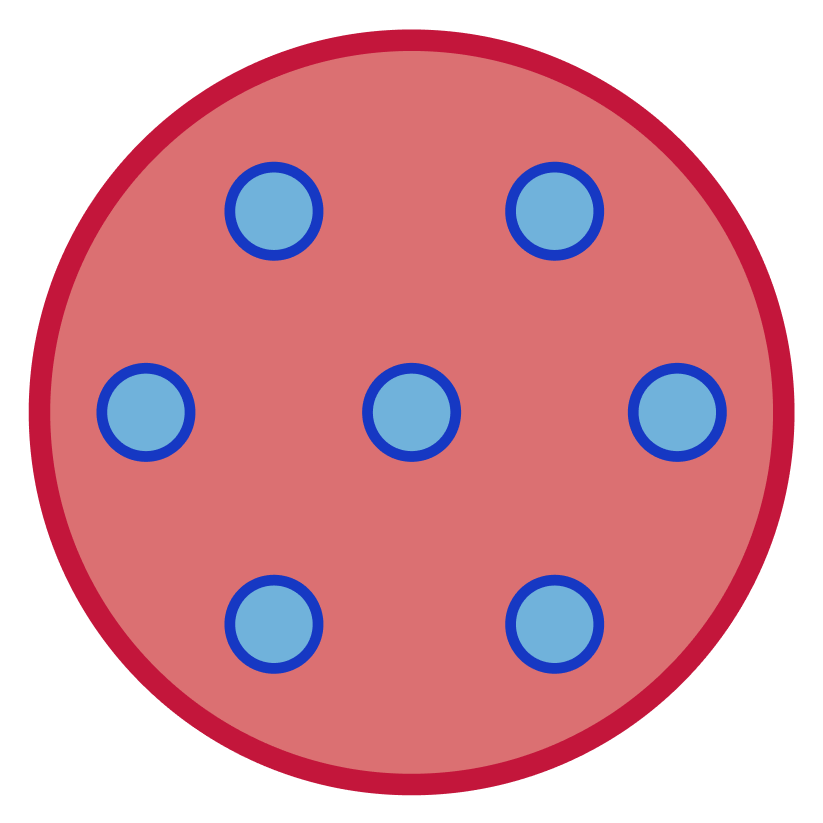
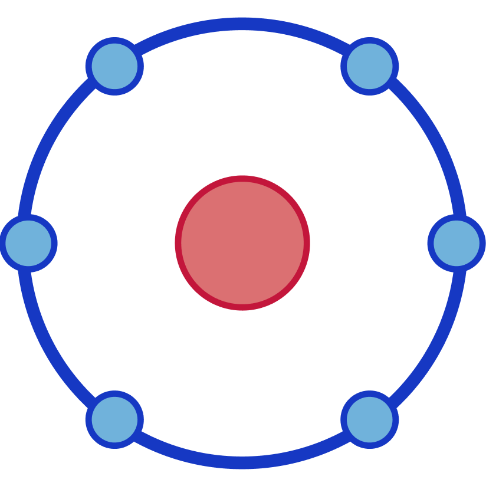
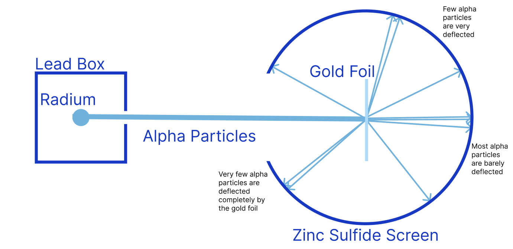

John Dalton's model of the atom resembled small spheres, and they followed four rules.

J. J. Thomson's model was created due to the discovery of electrons, which disproved earlier theories of the atom being one solid particle.
His model consisted of a positively charged cloud of matter, which contained evenly distributed negatively charged electrons. This model was later nicknamed the "Plum Pudding" model, due to its similarities to the dessert.

Ernest Rutherford's model was a result of Rutherford's Scattering Experiment (see below), a failed attempt at proving Thomson's model to be true, where it actually proved his theory to be false. It consists of a small, dense, and positively charged nucleus, with electrons orbiting the nucleus.
Rutherford fired a beam of alpha particles into a vacuum containing a very thin sheet of golden foil that would produce scintillations (flashes of light) when they hit a glass screen coated with zinc sulfide that was fixed to a rotatable microscope, used to observe the scintillations.
Rutherford expected to see the alpha particles scatter in a uniform pattern when passing through the foil's atoms and come out the other side with little to no deflection. What he observed proved him wrong, and gave him the information to create the next accepted model of the atom.
Observation 1: Majority of the flashes of light were observed directly opposite to the source of alpha particles after passing through the gold foil. This means that there was a lot of empty space in the atom.
Observation 2: A few of the alpha particles were seen at completely different angles after passing through the gold foil. This means that there had to be a very small and positively charged part of the atom (the nucleus), because only another positive charge can repel the positive charge of the alpha particles enough to change its direction.
Observation 3: Rarely, an alpha particle would not pass through the gold foil, and would reflect back towards the source. This meant that the nucleus was both positive and dense. It had to be positive to repel an alpha particle. It also needed to be dense in mass in order to reflect the alpha particle, which is a relatively large particle.
These three observations gave Rutherford the conclusion that an atom consists of mostly empty space, with a small, dense, positively charged nucleus, with orbiting electrons.
